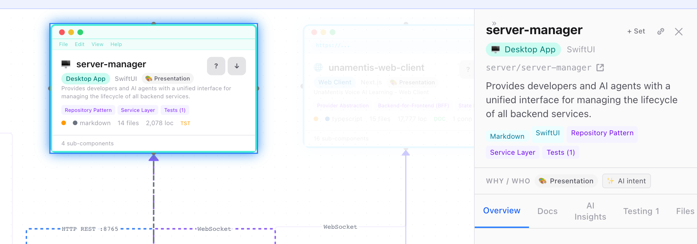
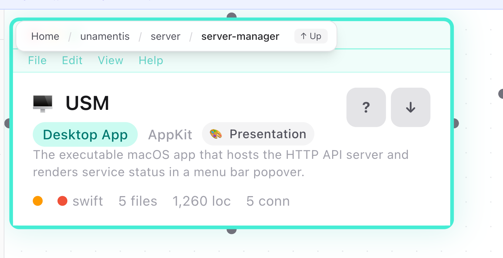

Change-aware extraction
Source is parsed without requiring an AI model. Facts are kept in SQLite and keyed by content hash, so a maintenance run can update changed files without parsing unchanged files again.
SysCorpus turns a codebase into an interactive, evidence-aware map and keeps that map current as the code changes. People and AI agents can inspect the same system from the whole architecture through its dependencies and down to files, symbols, and source.

A direct, focused browser capture from a real development codebase: a selected component, nearby relationships, and its evidence-bearing detail panel. This is product evidence, not a demo announcement. Launch captures will replace it only after a public SysCorpus map has graduated.
The architecture is not maintained as a separate drawing and is not normally rebuilt wholesale. A persistent fact store accepts changes and refreshes the affected system neighborhood.
AI can create working software faster than a team can form a reliable mental model of it. SysCorpus addresses that comprehension gap with a navigable representation of the system, grounded in the system itself.
Source is parsed without requiring an AI model. Facts are kept in SQLite and keyed by content hash, so a maintenance run can update changed files without parsing unchanged files again.
Components and relationships are assembled into a hierarchy, then projected into a single JSON file or a lightweight manifest with lazy detail shards.
AI enrichment is additive and off by default. When enabled, claims must cite repository or store evidence. Unsupported answers are narrowed or declared as honest gaps.
| Layer | What it can represent | Examples |
|---|---|---|
| Structure | Applications, services, packages, modules, screens, files, symbols, and nested component trees. | web clientAPI serverclassfunction |
| Connections | Imports, HTTP and port references, Docker links, gRPC, WebSocket, database, navigation, and related edges. | runtime flowdependencysource link |
| Operational facts | Declared and locked dependencies, direct/transitive scope, versions, pin state, language and SDK targets, vendored code, ports, endpoints, environment variables, tests, and CI status. | CycloneDX SBOMsupply chainlive status |
| Behavior and meaning | User flows, capabilities, data entities, business rules, architecture findings, documentation content, and change activity. | flowrulesblast radius |
The interface is layered for readers who need orientation first and technical evidence later. It does not assume they already know the stack.

Direct browser capture after drilling into one subsystem. The complete component remains readable at print scale, and the breadcrumb preserves the route back to the whole system. The cover shows the complementary component-detail view. Final collateral should replace both with one continuous screenshot story from the first public SysCorpus map.
Primary components use frames that match their role: phone, browser, server rack, watch, desktop window, terminal, or service. Runtime connections and structural dependencies are visually distinct.
Large maps can ship a compact manifest and fetch per-component details only when opened. Search indexes can arrive in shards while the already-loaded portion remains usable.
Completeness and evidence are treated as data contracts and release gates, not as tone-of-voice promises.
A plausible but quietly wrong map is more dangerous than an obviously incomplete one. The implementation is therefore organized around traceability, cross-surface agreement, and explicit gaps.
every path → exactly one dispositionStatic derivation or optional enrichment produces a purpose, mechanism, relationship, finding, or next step.
File, line, symbol, manifest, and store references are validated without asking an AI to grade itself.
A supported claim ships. An unsupported clause is narrowed. An unresolved question becomes an honest gap.
Orientation, model work, independent adjudication, synthesis, and final determination operate against a completeness contract. Work escalates only when a lower rung cannot ground an item. Every run writes a report and usage ledger. Current engineering also supports persisted pause, resume, and cancel state so paid work can be banked instead of repurchased.
Cycles, coupling, boundary strength, and blast radius are derived without a model; ranked correlations also surface duplication, inconsistency, unreferenced code, and verified intent violations. No universal grade is emitted. The same findings can be exported as SARIF 2.1.0 for code-scanning workflows.
The viewer, ai.json, llms.txt, and twelve MCP tools read the same store. Companion artifacts carry the CycloneDX SBOM, CRA-readiness checklist, and SARIF findings.
Enrichment and design signals are off by default. When off, they are designed to leave the default projection byte-identical.
If a language cannot support a metric, the value remains unknown. The interface does not turn missing evidence into a reassuring number.
Coverage, claim verification, manifest/front-door agreement, attribution, licensing, and representation checks run before a public map can graduate.
The visual system is moving toward a strict separation between the map's meaning and its dress, including organization-specific presentation.
A software map may be read by an engineer at a workstation, an executive in a review, an operator in a control room, or an AI agent with no screen at all. The underlying evidence should remain stable while each surface becomes appropriate to its reader.
The live syscorpus.com homepage demonstrates Atlas, Ledger, and Signal by applying three CSS treatments to one unchanged block of specimen markup. Its numbers are explicitly illustrative. The separation itself is the proof.
The viewer already has dark and light presentation, responsive desktop and mobile layouts, role-specific component frames, and data-driven lenses. The public site carries the working three-style CSS demonstration.
Move the production viewer toward the same separation: interchangeable visual skins over one stable semantic model, eventually including customer or organization branding without forking map behavior or evidence.
| Mode | What is delivered |
|---|---|
| Local / static | A browser-ready bundle that can be opened locally or hosted as ordinary static files. |
| Single file | One architecture.json for smaller systems and simple distribution. |
| Split output | A small manifest plus on-demand detail and search shards for larger systems. |
| CI / scheduled | Automation can ingest changes and publish an updated map after merges, on pushes, nightly, or at another project-appropriate cadence. |
| Live monitoring | Optional status overlays, version history, activity, and adaptive polling through static hosting or a Cloudflare backend. |
Status below is intentionally dated. It distinguishes what exists in the repository from what is under validation and what remains direction.
| Area | Status | Factual state on 1 Sep 2026 |
|---|---|---|
| Core and updates | Built foundation | The v2 fact store, content hashing, coverage ledger, multi-repository composition, parser families, and single/split projections are built. Changed files update without re-parsing unchanged files. Full dependency and blast-radius propagation is the explicit next v2 treatment. |
| Interactive viewer | Built | The comprehension-first Overview is primary and opens focused paths into the hierarchical graph, eight gated lenses, search, source deep links, code previews, annotations, tours, activity and ownership signals, mobile behavior, live status, and administration surfaces. The former dense workspace is deprecated and retained temporarily for compatibility and validation. |
| Machine access | Built | ai.json, llms.txt, and a zero-dependency MCP server with twelve read-only, evidence-oriented tools are implemented and checked against the same fact store. |
| Supply chain and SBOM | Built | Eight manifest ecosystems feed an evidence-linked supply-chain view with resolved versions, direct/transitive scope, pin state, SDK targets, vendored code, fixture separation, and parse warnings. Each dependency-bearing repository projection emits CycloneDX 1.5 sbom.json. |
| Security and vulnerabilities | Go-live requirement | Useful inputs already exist: network schemes and edges, authentication patterns, environment variables, secret-shaped inventory, rules, dependency pinning, and CRA hygiene checks. A unified security view and SBOM package/version matching against maintained vulnerability feeds, with CVEs surfaced as evidence, are required before go-live and are not claimed as complete today. |
| Evidence-bound enrichment | Private run complete | The five-phase engine, completeness contract, adjudication, usage ledger, run reports, quality audit, pause/resume controls, and provider circuit stops are built. A full large-repository run completed; deterministic reconciliation and two remaining gate criteria still prevent publication. |
| Public maintained corpus | Next threshold | The harness, private preview, attribution and license review, comprehension instrument, and graduation gates exist. Major open-source maps will publish one at a time, stamped with source and commit and refreshed on a project-appropriate schedule. No subject is announced before its map is ready. |
The full private run completed with zero provider failures, retries, or output-budget violations. It remains gated and unpublished because one subject criterion and one universal criterion are unmet. This is validation evidence, not a public demo.
SysCorpus is early and independent. The engine, viewer, SBOM and supply-chain surface, quality gates, and comprehension instruments represent substantial completed work. A full-scale private validation run has completed; its result remains gated and unpublished. No public subject map has graduated. The unified security view and CVE/advisory correlation are explicit go-live work, not present-tense claims.